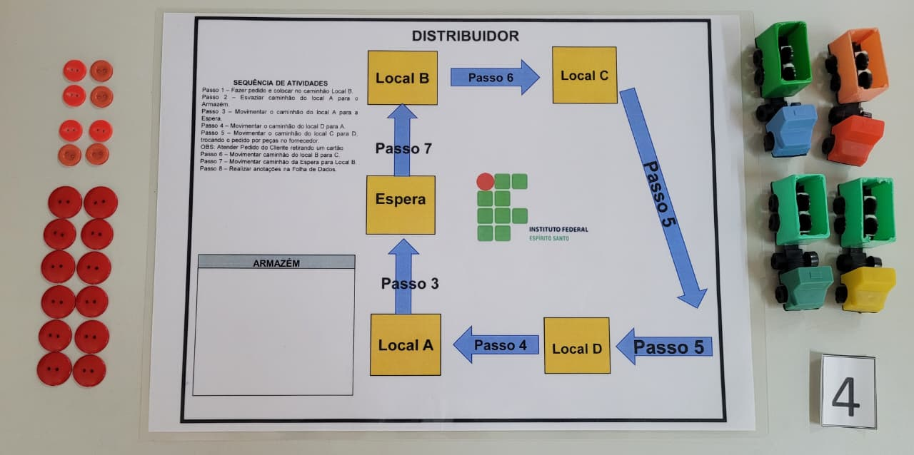

Milk Game OPERACIONAL
Categoria: Jogo de simulação da cadeia de suprimentos para o ensino de gestão de estoques e do Efeito ChicoteIdentificação Patrimonial
| Código Interno | MKG001 |
|---|---|
| Endereço Físico | Sob guarda do técnico – ver Itens Sobressalentes |
| Fornecedor | A confirmar |
1. Descrição e Finalidade
O Milk Game é uma dinâmica de simulação da cadeia de suprimentos baseada no Beer Game, desenvolvido no MIT Sloan School of Management. O jogo reproduz o fluxo de pedidos e de produtos entre quatro elos de uma cadeia de distribuição de leite (varejista, atacadista, distribuidor e fabricante), em que cada participante decide quanto pedir ao seu fornecedor sem conhecer a demanda real do consumidor final.
No Laboratório de Logística, o kit é empregado em aulas de gestão de estoques, cadeia de suprimentos e planejamento da produção, permitindo que os estudantes vivenciem o Efeito Chicote (Bullwhip Effect): pequenas variações na demanda final geram oscilações cada vez maiores nos pedidos e estoques à medida que se sobe na cadeia, com aumento de custos e rupturas de abastecimento.

2. Especificações Técnicas
| Tipo | Jogo de tabuleiro para simulação logística |
|---|---|
| Componentes | Tabuleiro com os 4 elos da cadeia, fichas de estoque, cartões de pedido, cartas de demanda, planilhas de registro e manual do facilitador |
| Participantes | 4 jogadores por equipe (varejista, atacadista, distribuidor e fabricante) e 1 facilitador |
| Duração estimada | 20 a 25 rodadas, seguidas de discussão dos resultados (debriefing) |
| Estoque inicial (por elo) | 12 unidades |
| Lead time | 2 rodadas entre cada elo |
| Custo de estoque | R$ 0,50 por unidade por rodada |
| Custo de ruptura | R$ 1,00 por unidade em falta por rodada |
| Demanda do consumidor | 4 unidades por rodada, com alteração a partir da 5ª rodada |
3. Guia Rápido de Operação
Checklist pré-uso:
- Solicitar o kit ao técnico do laboratório e conferir se tabuleiro, fichas, cartões e manual estão completos;
- Providenciar uma planilha de registro em branco para cada jogador (fotocópia do modelo do kit);
- Separar as cartas de demanda na ordem definida pelo facilitador, sem exibi-las aos participantes;
- Organizar as mesas de modo que cada equipe fique com os quatro elos lado a lado.
Cuidados:
- Não revelar a série de demanda antes do fim do jogo, pois o efeito pedagógico depende da incerteza dos jogadores;
- Não permitir a comunicação entre os elos durante as rodadas;
- Manter as fichas sobre o tabuleiro e evitar que sejam misturadas entre equipes;
- Manter líquidos e alimentos afastados do tabuleiro e dos cartões.
Passo a passo:
- Formação das equipes: dividir a turma em grupos de 4 jogadores e atribuir um papel a cada um. Estudantes excedentes atuam como observadores.
- Preparação: posicionar o tabuleiro e distribuir 12 fichas de estoque em cada elo, além das fichas em trânsito indicadas no manual.
- Rodada: o facilitador revela a demanda do consumidor ao varejista; cada elo atende o pedido recebido, movimenta as fichas em trânsito e emite seu novo pedido ao fornecedor.
- Registro: ao final de cada rodada, cada jogador anota na planilha o estoque, o pedido emitido, o pedido recebido e o custo da rodada.
- Encerramento: após 20 a 25 rodadas, somar os custos por elo e por equipe.
- Debriefing: construir os gráficos de pedidos de cada elo, comparar com a demanda real revelada pelo facilitador e discutir as causas do Efeito Chicote.
4. Normas de Segurança e Cuidados
EPIs necessários: não se aplica.
Quem pode operar: professor ou técnico de laboratório como facilitador; estudantes como participantes.
Restrições: utilização apenas em atividade planejada nas dependências do laboratório; os componentes do kit não devem ser retirados do laboratório.
Treinamento necessário:
- 🔲 Nenhum
- ☑️ Básico (facilitador deve conhecer as regras e o roteiro de debriefing)
- 🔲 Intermediário
- 🔲 Operação exclusiva do técnico
5. Manutenção e Conservação
Contagem de componentes: conferir a quantidade de fichas e cartões ao final de cada uso e repor itens perdidos antes da próxima atividade.
Tabuleiro e cartões: limpar com pano seco; substituir cartões rasgados, dobrados ou ilegíveis.
Planilhas de registro: manter o modelo original dentro do kit e utilizar apenas fotocópias durante as atividades.
Armazenamento: guardar o kit fechado, em local seco e protegido da luz solar direta, sob guarda do técnico.
6. Checklist Pós-Uso
Para encerrar a atividade e guardar o material:
- Recolher e contar todas as fichas de estoque;
- Organizar os cartões de pedido e as cartas de demanda nos compartimentos correspondentes;
- Inspecionar o tabuleiro quanto a danos ou sujeira;
- Recolher as planilhas preenchidas para análise dos resultados;
- Recolocar o manual do facilitador na caixa;
- Fechar o kit e devolvê-lo ao técnico;
- Registrar componentes faltantes ou danificados no controle do laboratório.
7. Referências e Documentação
- STERMAN, J. D. Modeling managerial behavior: misperceptions of feedback in a dynamic decision making experiment. Management Science, v. 35, n. 3, p. 321-339, 1989.
- CHOPRA, S.; MEINDL, P. Gestão da cadeia de suprimentos: estratégia, planejamento e operações. 6. ed. São Paulo: Pearson, 2016.
- Manual do facilitador do Milk Game (incluso no kit).